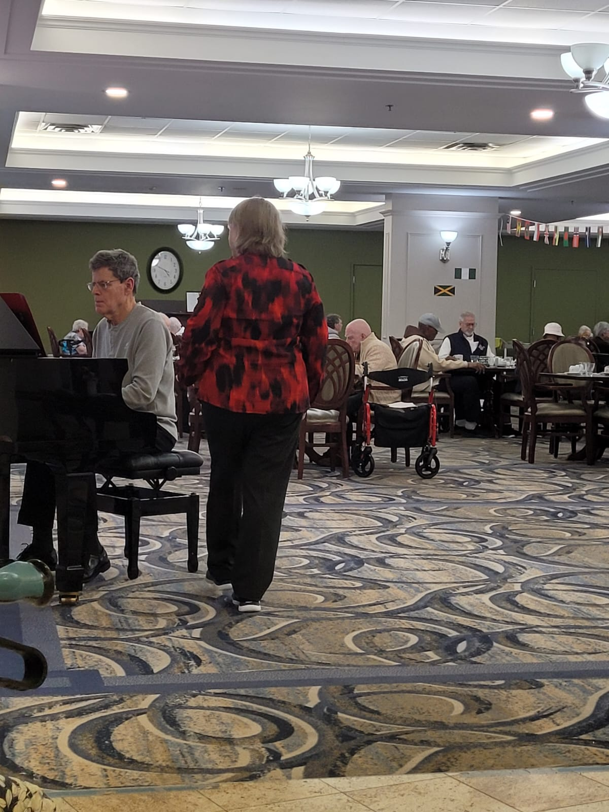

My name is David Davies and I'm a professional pianist with over 40 years of experience. I play at retirement and long-term care homes because I believe live music has a unique power to brighten someone's day, spark memories, and bring people together.
I'd love the opportunity to play for your residents on a regular or occasional basis. I charge standard rates and all I need is a piano or keyboard and an audience.